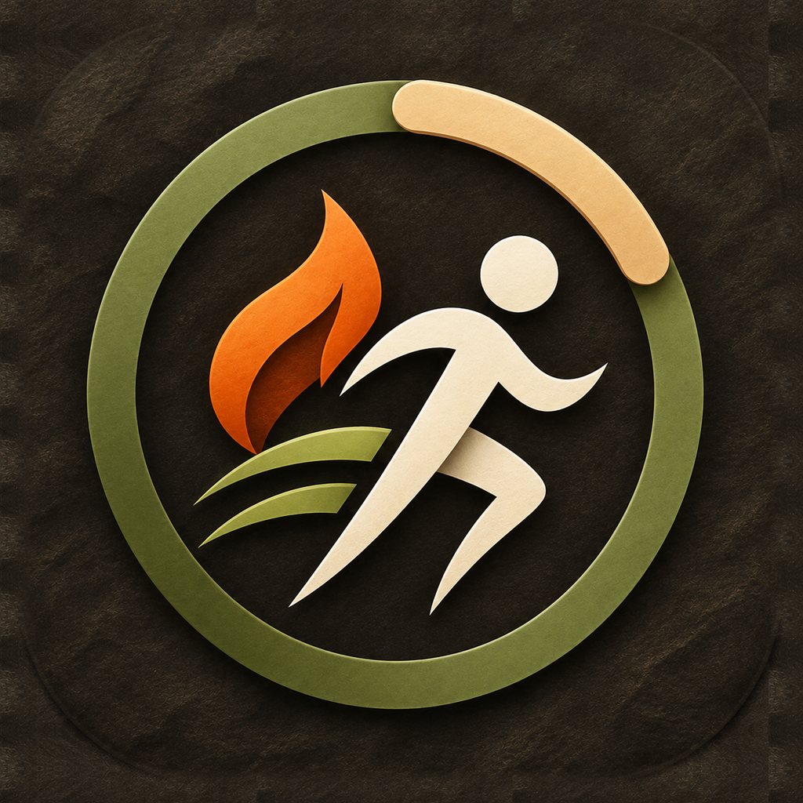

Nutrition
Track calories and macronutrients, manage your personal food library and simplify meal logging.
CalorStride is an independently developed iPhone application designed to help you manage nutrition, track workouts and work toward your personal wellness goals.
Built around privacy, local data storage and personal control.
Free by design. No ads, subscriptions or in-app purchases.

Track calories and macronutrients, manage your personal food library and simplify meal logging.
Record workouts and monitor your personal fitness progress over time.
Establish personal targets and optionally connect Apple Health to view supported wellness measurements.
CalorStride is currently in development and preparing for internal TestFlight testing. It is not yet publicly available on the App Store.
For general inquiries, contact contact@calorstride.com.
For application assistance, visit our support center.